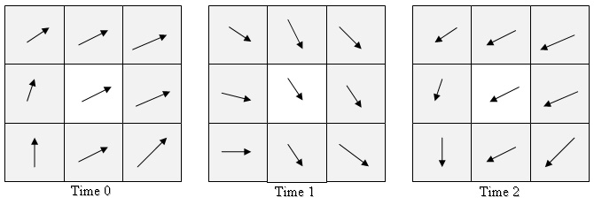
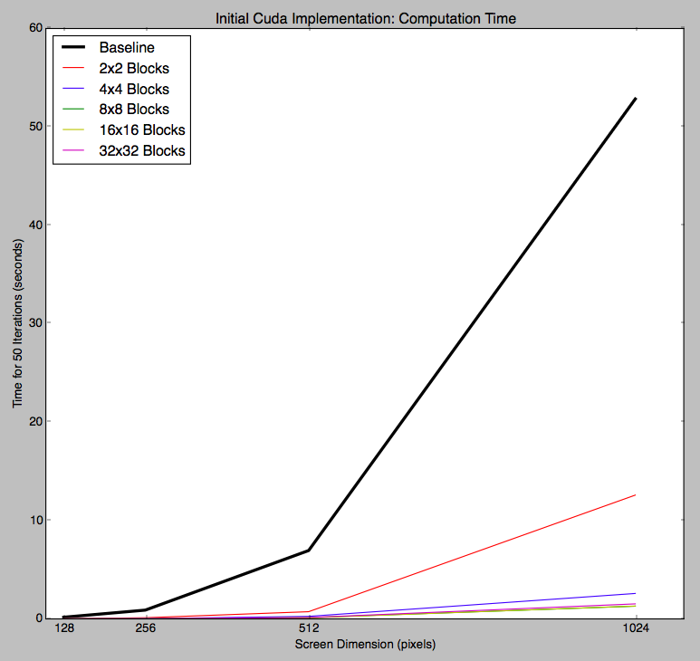
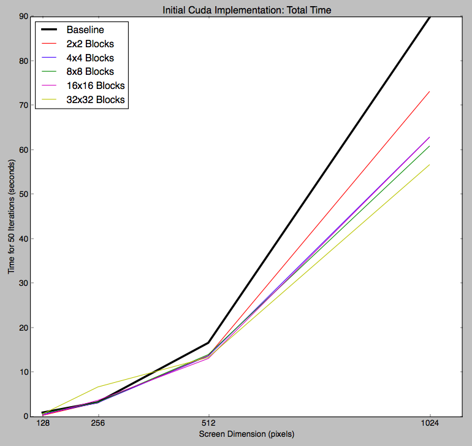
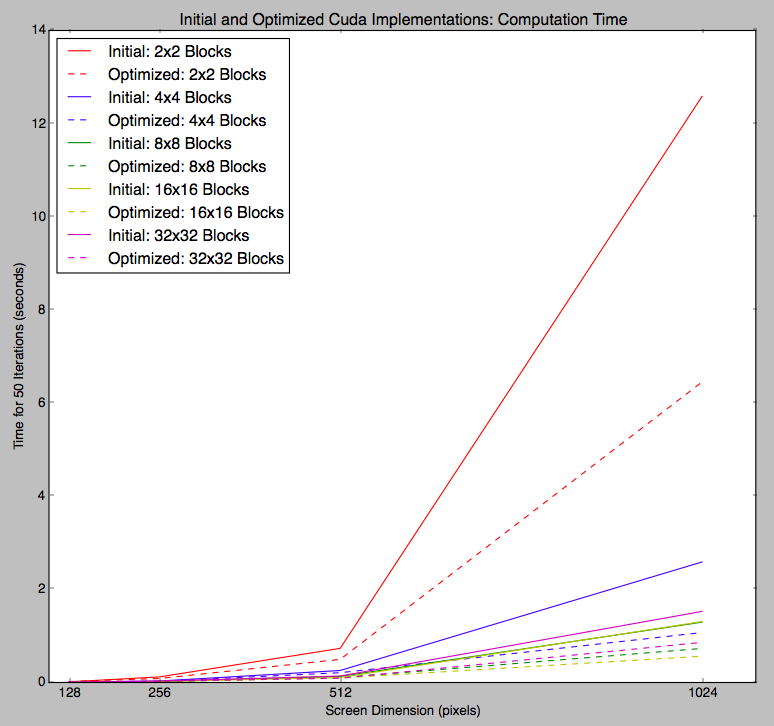
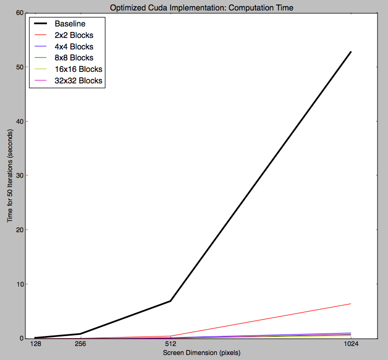
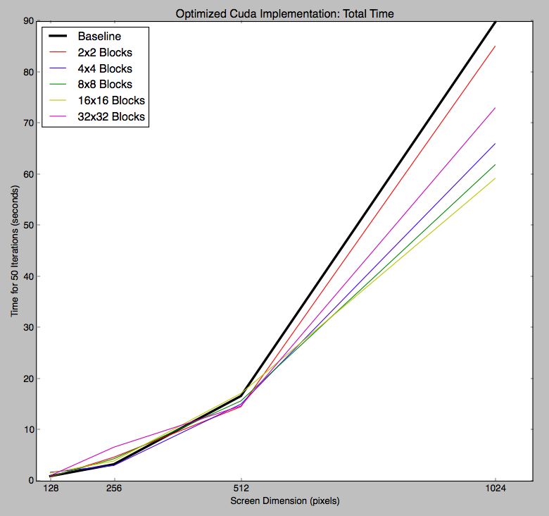

Summary
We implemented a fluid simulation on a CPU with OpenMP and on a GPU with CUDA from scratch, and compared the performance of the two implementations. The fluid responds to mouse interactions, and renders a display using OpenGL.
Background
The simulation of fluids is computationally very extensive, and could benefit greatly from paralellization since computations are being done for each of the pixels.
In a grid-based simulation like ours, the fluid is represented by dividing up the space a fluid might occupy into individual cells (in our case, pixels), and storing certain quantites of the fluid in each cell, like velocity, pressure, and color. These different quantities represent the fluid at each cell at a certain point in time, and are represented in separate arrays.
|  |
A fundamental operation in grid-based fluid dynamics is advection, which is moving quantities (like velocity, pressure, color, etc.) across the grid for the next time step based on the current velocity of each cell. Additionally, there are other operations that account for vorticity (rotation), divergence, pressure, and color to create realistic fluid motion.Due to the nature of fluid motion, these operations
We can use parallelization within each of these computations to perform the operations on each cell in parallel. However, each important operation needs to be done in sequence. This is because the computation for a given cell relies on the result of previous computation for both itself and its neighboring cells.
At the end of each time step, the appropriate colors are given to OpenGL to render onto the screen. The faster the computation is, the faster each frame is able to be rendered, which creates a more seamless simulation.
Approach
We used CUDA to map the computation onto the GPU. Specifically, we translated the operations into kernels, which we called on thread blocks that were 16x16. While doing this, we came across dependencies within operations, and had to separate these into different kernels.
Results
One of our concerns throughout the project was to make a simulation that looked realistic. We didn't want to end up parallelizing something completely useless, so we put a lot of effort into our baseline implementation. After struggling through some unfamiliar physics and fluid mechanics, we are pretty proud of the visual aspect of our project.
To evaluate the performance of our implementations, we ran on the GHC machines. The machines each contain an 8 core 3.2 GHz Intel Core i7 processor and an NVIDIA GeForce GTX 1080 GPU.
Our initial parallel implementation involved converting all of the functions to CUDA kernels so that the computations could be done in parallel on the GPU. We were pleased with the results. For just the computation portion, our GPU implementation achieved around 35x speedup over the baseline CPU implementation. The graph below shows the time spent doing computation for the pixels with our baseline implementation and our CUDA implementation (with different block sizes) for a various screen sizes.
Obviously, the graph is upward trending since the larger screens have more pixels and require more computaiton.In general, we see that the use of thread blocks in CUDA increases performance because it supports work being done in parallel. Additionally, on modern NVIDIA hardware, groups of 32 CUDA threads in a thread block are executed simultaneously using 32-wide SIMD execution. This explains why the 2x2 and 4x4 thread blocks achieves less speedup - with only 4 or 16 threads, there are empty, unused SIMD vector lanes.

Computaiton time for 50 iterations of various screen sizes, using our initial CUDA implementation
Although this initial parallel implementation achieved impressive speedup over our baseline during the phase where the computation for each pixel is done, we noticed that the overall time was not significantly shorter. The graph below shows the total time to run 50 iterations, for our baseline and CUDA implementations with different block sizes. When considering the entire program, our initial parallel GPU implementation achieved only around 1.5x speedup over the CPU implementation.

Total time for 50 iterations of various screen sizes, using our initial CUDA implementation
This suggested to us that the actual drawing of the pixels in the display was a time consuming portion of our program. Online research confirmed that the glDrawPixels function is generally slow. We spent two full days trying to figure out how to render to a CUDA surface object (to be stored in GPU memory) which could be bound to a texture and displayed more efficiently with openGL. We tried our best and followed various examples from the internet, but we were ultimately unable to figure it out. We decided it would be more productive for us to continue optimizing the computational render portion of the program, where we would be able to apply more topics from the course.
The first major change we made to our parallel implementation was to take advantage of thread block shared memory. Loading data into the shared memory of a thread block allows it to be accessed quickly for computation later, since the latency is significantly lower for accessing shared memory than uncached global memory. In each kernel launch, we have a thread corresponding to each pixel in our display window. So, at the start of a kernel, each thread can load the data for its corresponding pixel into a shared memory array. After calling __syncthreads(), we ensure that all threads in the block have loaded their data. Then, as we proceed with the computation of the kernel, most of the required memory accesses will have already been loaded into shared memory, so they can happen very quickly.
We first noticed the opportunity to take advantage of shared memory in the kernels with computations that require the values of the top, bottom, left, and right neighboring pixels of the current pixel. Each thread block corresponds to a square of pixels in the display, so a pixel's neighbors are likely to be in the same block. Consider a kernel that requires the pressures of the neighboring pixels, for example. First all the threads in the block cooperatively work to load the pressures of the corresponding pixels, with each thread loading one value. Once all the data is loaded into shared memory, each thread performs the computation involving its neighbors. If a neighbor is in the same block, the thread looks up the pressure from the shared array. In the few cases were a pixel's neighbor is outside of the block, the thread looks it up from global memory. This access is still slow, but there are relatively few of them.
We also noticed that shared memory could help in the advect forward and backward kernels for both velocity and color. During advection, a pixel is assigned a new value based on the value of a pixel nearby, which is likely in the same block. So, preloading all the values into shared memory before advecting increases the number of memory accesses that can be serviced by shared memory rather than global memory, which is slower.
Additionally, in our intial CUDA implementation, we called cudaDeviceSynchronize() after every kernel call. This was to respect the sequential nature of the computation, where each computation relies on the results of the previous computation. However, when optimizing we realized that we could get away with removing some of the synchronization and still display a realistic simulation. Specifically, we removed the cudaDeviceSynchronize() between advecting forward and backward (for both velocity and color). With this change, it is possible that two threads will write a new value to the same pixel and only one will be recorded. However, pixel perfect accuracy is not required to acheive a reasonable simulation. Removing the extra syncrhonization means that resources need not be idle between these steps.
These changes improved our GPU implementation substantially. The graph below shows the computation time for the inital GPU implementation compared to the optimized GPU implementation, for various block sizes. For all block sizes, the dotted line (which represents the optimized version) is lower than the solid line (which represents the initial version). This suggests that our optimizations were effective.

Total time for 50 iterations of various screen sizes, using our initial CUDA implementation
With these changes, we improved our GPU implentation speedup over the CPU implementation for just the computation portion to around 80x, shown in the graph below.

Total time for 50 iterations of various screen sizes, using our initial CUDA implementation
Unfortunately, our speedup is still ultimately limited by the slow drawing. Even with our improvements, our GPU implementation still achieves around 1.5x speedup over the CPU implementation for the total time.

Total time for 50 iterations of various screen sizes, using our initial CUDA implementation
As all of our graphs demonstrate, we experimented with different thread block sizes. Our results indicate that 16x16 thread blocks, which correspond to 16x16 pixel squares of the display, acheived the lowest times.